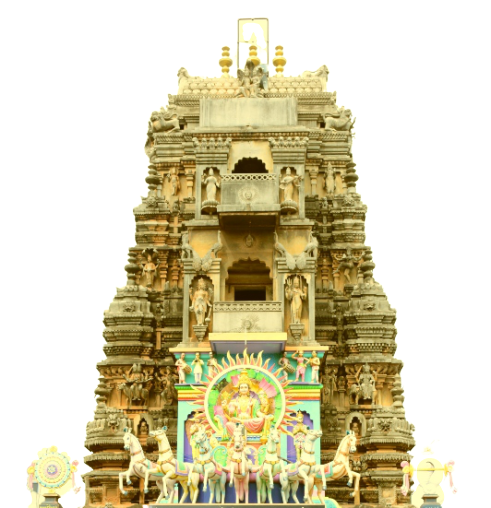

శ్రీ సూర్యనారాయణ స్వామి వారి దేవస్థానం
దేవాదాయ - ధర్మాదాయ శాఖ
గొల్లలమామిడాడ-533344, పెదపూడి మండలం,
తూర్పు గోదావరి జిల్లా, ఆంధ్రప్రదేశ్.

శుద్ధ ఏకాదశి ( తొలి ఏకాదశి , శయన ఏకాదశి , ఛాతుర్మాస్య వ్రతారంభం ) రోజున స్వామి వారికి అభిషేకాదులు జరిపించి తదనంతరం అలంకరణ విశేష అర్చనలు జరుగుతాయి
కృష్ణాష్టమి రోజున ఉట్ల సంబరం , కృష్ణ జన్మోత్సవం , కాయము ( కాయపు ముద్ద ) పంచుట జరుగును .
శుద్ధదశమికి శమీ వృక్ష ఆరాధన ( జమ్మి చెట్టు ) అర్చన . అపరాధిత పూజలు దేవాలయము వద్దనున్న శమీ వృక్ష మూలమున జరుగును .
వైష్ణవ ఆగమ ప్రకారం కృత్తికా దీప ప్రారంభం ఆశ్వీయుజ పూర్ణిమ నుండి కార్తీక పూర్ణిమ వరకు నెలరోజులు ఆకాశదీపం పెట్టుట ఇక్కడ దేవాలయంలో సనాతన ఆచార విశేషం .
నెలరోజులూ స్వామిని సేవించుకొనుటకు వచ్చే భక్తులు , దీక్షాస్వాములతో దేవాలయం రద్దీగా ఉంటుంది .
కార్తీక శుద్ధ ద్వాదశీ అనగా క్షీరాబ్ది ద్వాదశి రోజున శ్రీ స్వామి వారికి విశేష అర్చనలు మరియు స్వామి వారిని శేషవాహనంపై గ్రామోత్సవం జరిపించి రాత్రికి పవిత్ర తుల్యానదీలో శ్రీ వారికి తెప్పోత్సవం ( తెప్పతిరునాళ్ళు ) అత్యంత వైభవంగా నిర్వహించబడును . శ్రీవారి ఆలయ ప్రాంగణం దీపములతో అలంకరించెదరు .
ధనుర్మానోత్సవం ( నెలగంట ) ప్రారంభం నుండి భోగి వరకు ముప్పదిరోజులు ప్రాతఃకాలమున పవిత్ర తుల్యానది నుండి తీర్థపుబిందెతో తీర్థమును తెచ్చి స్వామిని అర్చించి పాశుర విన్నపములు ద్రవిడవేద పారాయణలు ప్రబంధ పఠనములు తీర్థగోష్ఠి ప్రసాద వినియోగములు జరుగును . ప్రతి నిత్యం స్వామివారిని పల్లకీ సేవ గ్రామంలో నిర్వహించెదరు .
సూర్యుడు మకరరాశిలో ప్రవేశించిన మకర సంక్రాంతి రోజున స్వామి వారికి విశేష అర్చనలు జరుగును . ఈ సంక్రాంతి పర్వదినమున ఉత్తరాయన పుణ్యకాలములో స్వామి వారికి విశేష అలంకరణలు చేసి విశేష అర్చనలు జరుగును . శాస్త్ర విధిగా ఆ సంవత్సరం పంచాంగం ప్రకారం మకర సంక్రాంతి పుణ్యకాల సమయమున స్వామికి భక్తులు సమర్పించ వలసిన దానాదులు సమర్పించబడును .
రోజున శ్రీవారి ఉత్తరద్వార దర్శనము తెల్లవారుఝామునుండి ఉదయం 6 - 00గంటల వరకు ఉత్తర ద్వార దర్శనం జరుగును . అనంతరం స్వామివారిని గరుబవాహనం పై గరుడోత్సవం గ్రామపుర వీధులలో జరుగును . రాత్రికి ఆలయ ప్రాంగణం దీపాలతో అలంకరించెదరు .
సూర్యనారాయణ స్వామికి అత్యంత ప్రీతిపాత్రమగుటచే ప్రతీ ఆదివారములలో విశేష అర్చనలు ప్రతి నిత్యము మాఘపూజలు జరుగును .
సూర్య జయంతి రోజున శ్రీవారికి సప్తదశకలశస్నపనాధులచే అభిషేకములు విశేష అలంకరణ అమృత కలశ వితరణ జరుగును
అమృత కలశతీర్థము : . ఈ అమృత కలశతీర్థము పాలతో ప్రత్యేకించి సుగంధ ద్రవ్యాదులచే తయారుచేసి భక్తులకు ప్రసాదములుగా అందించెదరు . రోగులు , సంతానములేని విశేషముగా ఈ తీర్థమును తీసుకున్న రోగులకు రోగనివృత్తియు , వంధ్యలకు సత్సంతాన ప్రాప్తియు కలుగును .
ఈ రధసప్తమి రోజున స్వామివారికి రథోత్సవం జరుగును . రాత్రికి ఆలయ ప్రాంగణం అంతా దీపములచే విశేషంగా అలంకరించెదరు .
భీష్మ ఏకాదశీ పర్వదినమున శ్రీ స్వామివారికి రాత్రికి కళ్యాణ మహోత్సవం అత్యంత వైభవంగా జరుగును .
పగలు శ్రీ స్వామి వారికి రథోత్సవం వివిధ వేషధారుల మధ్య , వివిధ వాయిద్యాల మధ్య భక్తుల వివిధ జయజయ ద్వానాల మధ్య ఊరేగింపు ఉత్సవం జరుగును. రాత్రికి శ్రీ వారి కళ్యాణ మహాత్సవానంతరం శ్రీ స్వామివారిని అమ్మవార్లతో కల్సి గరుడవాహనంపై వేంచేయింపచేసి శ్రీవారికి జరిపించెడి ఉత్సవంలో ఎక్కువ బాణాసంచా పోటీల ధ్వని కాంతులతో , నృత్యగీతాది మంగళవాయిద్యముల మధ్యన శ్రీ స్వామివారిని దర్శించుటలో భక్తులకు భువియే ఒక వైకుంఠముగా భావించెదరు .
త్రయోదశి శ్రీవారికి సదశ్యమహోత్సవం సతుర్థశి రోజున శ్రీవారి గరుడోత్సవం మాఘశుద్ధపూర్ణిమ రోజున శ్రీవారి వసంతోత్సవ కంకనవిసర్జనము శ్రీవారి చక్రతీర్థ స్నానమహోత్సవ పవిత్రతుల్యానదీ తీరమున జరుగును . అనంతరం పూర్ణాహుతి మహోత్సవం జరిపించెదరు .
చతుర్దశి రోజున శ్రీవారి గరుడోత్సవం
పూర్ణిమ రోజున శ్రీవారి వసంతోత్సవ కంకనవిసర్జనము శ్రీవారి చక్రతీర్థ స్నానమహోత్సవ పవిత్రతుల్యానదీ తీరమున జరుగును . అనంతరం పూర్ణాహుతి మహోత్సవం జరిపించెదరు .
పాడ్యమి రోజు రాత్రికి శ్రీ స్వామివారికి శ్రీ పుష్పయాగ మహోత్సవం కడు రమ్యముగా అద్దాల శయనమందిరమున జరుగును .
Special abhishekam, decoration and vishesha aarchana
Utla sambaram, Krishna janma ustavam, distribution of kayam
Semi vrukhsa pooja, Aparadhita pooja.
Aasweeja poornima to Karteeka poornima according to vyshnava sampradaya
Vishesha aarchana, Seshavahana seva, Grama ustavam, Deepa alankarana at temple premises
Dhanurmasa ustavam will be done 30days upto Bhogo festival. Everyday in the early morning, water brought from near by river Tulyabhaga and do Abhishekam to the God Suryanarayana Swamy and do special parayana & Everyday pallaki seva to the god in the village.
Special Decoration & Special Puja to the God Suryanarayana Swamy.
On Mukkoti Ekadasi Uttara Dwara darshanam(North Door visting) of God is allowed from Early Morning to 6:00am.
Later on Garuda vahanam Seva within the village.
In the Night: Deepa alankarana at temple premises
Maga Masam is the most special month for the God Suryanarayana Swamy,So on every sunday special Archana and Everyday Maga Puja Will done.
On this Day Special Abhishekam, Special Decoration & perform special decorative amrita kalasa.
Amrutha kalasa teertha offered to devotees, which is made with milk and sugandha dravya This milk helps us as a medicine for all disease & Those who did not have children drink this milk swamy blessed them with children
The chariot Festival is held for the Swami on the day of this RadhaSaptami. At night the entire courtyard of the temple is decorated with lights.
On the day of Magh Shudha Ekadasi, the Lord Sri Suryanarayana Swamy Kalyana Mahotsav is held in the most grand manner.
Chariot Festival is a procession between various musical instruments, devotees.
On this day Sadasyamahotsavam held to God Suryanarayana Swamy.
On the day of Chaturdasi, Srivari Garudotsavam is celebrated
On the day of Magasudha Purnima, Srivari Vasantha festival is held on the banks of the holy river.
On the night of Magha bahula Padhyami,Pushpayaga Mahotsavam is performed at Hall of Mirrors at Temple premises.